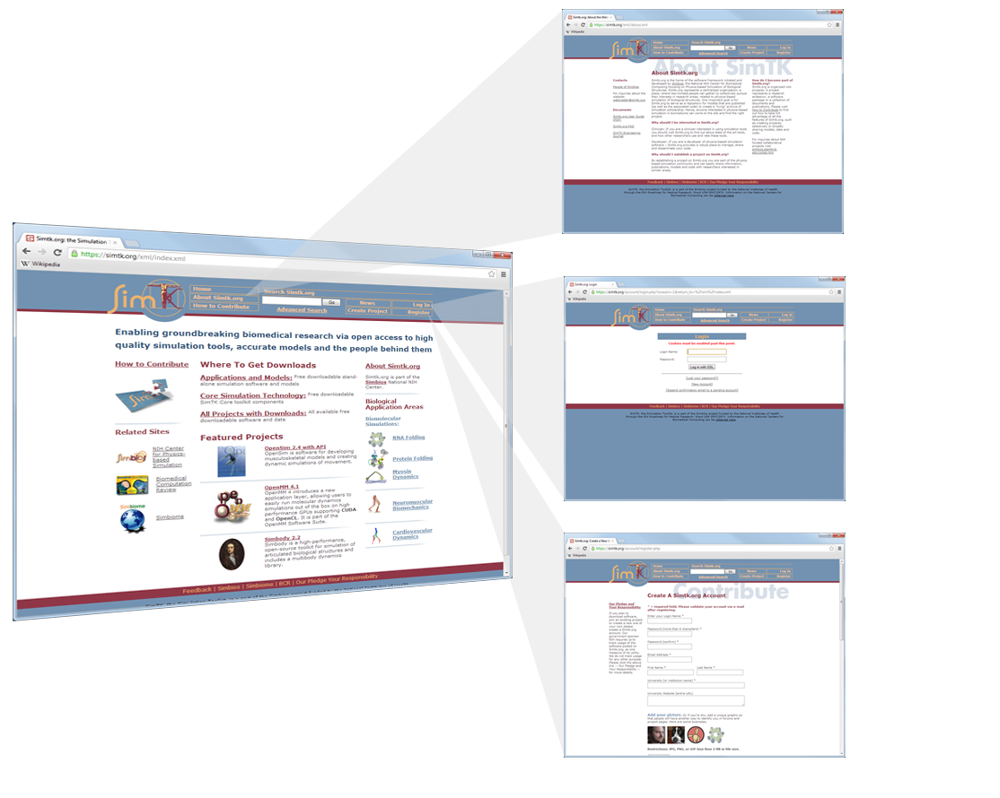
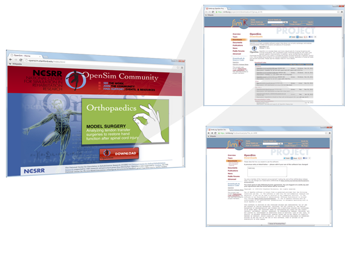

OpenSim Documentation : Getting OpenSim
This page last changed on Oct 08, 2012 by kevinxu.
OpenSim is available for download from Simtk.org. The following sections describe how you access OpenSim from the website:
Log In to SimTK.org
|  | Connect your browser to the Simtk.org (https://simtk.org) home page If you are already a member of Simtk, you can log in by clicking the Log In link in the top-right corner of the Simtk.org home page. Otherwise, to register as a new member, click on the Register link in the top-right corner of the Simtk.org home page.
 | Additional details related to Simtk.org registration and login are available by clicking on the About SimTK link in the top-left border of the Simtk.org home page. |
|
|---|
Download Installation Program
Download the OpenSim software from the Simtk.org website by following the steps below:
|  | Connect your browser to the OpenSim project home page (http://opensim.stanford.edu). Click on the Downloads link. You will jump to the Downloads page, where you can view current and previous releases of OpenSim. From the Downloads page, click on the link for the OpenSim executable, located in the Download Links section. There will be different versions of OpenSim available for different API programming environments; however, if you are only going to be using the OpenSim GUI (and not the API), you can download any of the versions to use. This will be the latest release of OpenSim. If you did not already log in, a new page will appear, requiring you to log in. Visit Log In to SimTK.org to learn how to log in. A page will then appear asking you to describe how you expect to use the software and presenting the license agreement for OpenSim. In the text field, describe your intended use of OpenSim and then click the button to accept the license agreement. A dialog box may or may not appear depend on the choice of your web browser, asking if you want to run or save the installation program. If there is the dialogue, click the Save button, choosing a convenient location (e.g., your Desktop) to save the installation program. If the dialog box does not appear, check your Browser security settings, which may be set to block pop-ups.
|
|---|
{kind=link}
{kind=link}